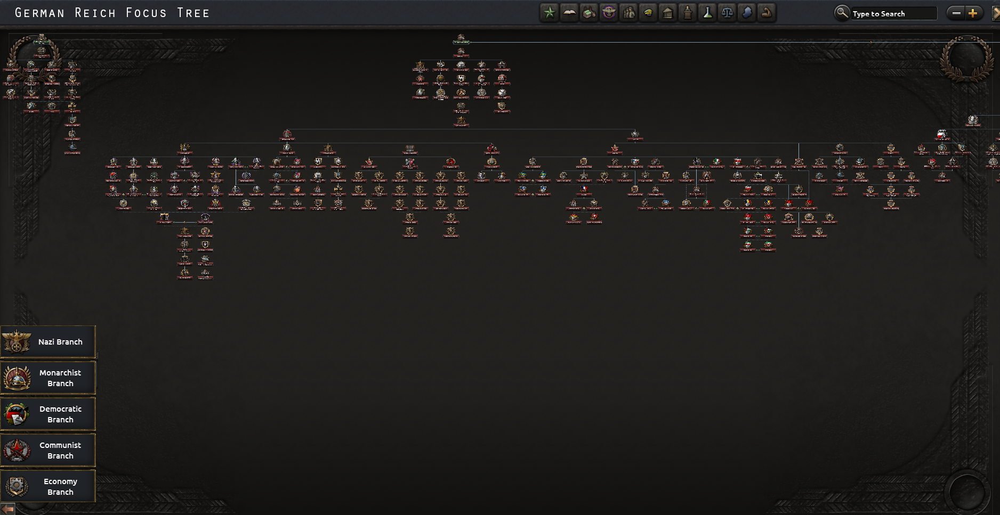
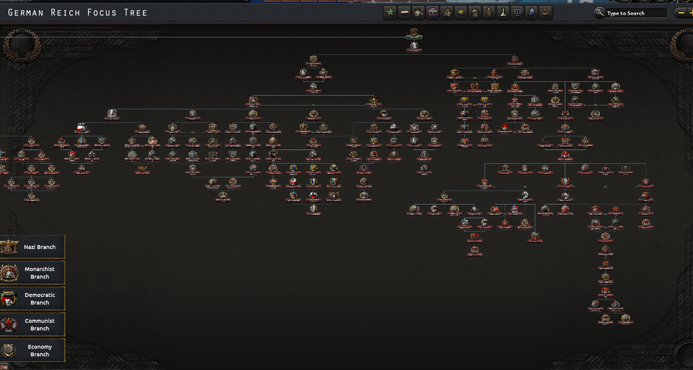
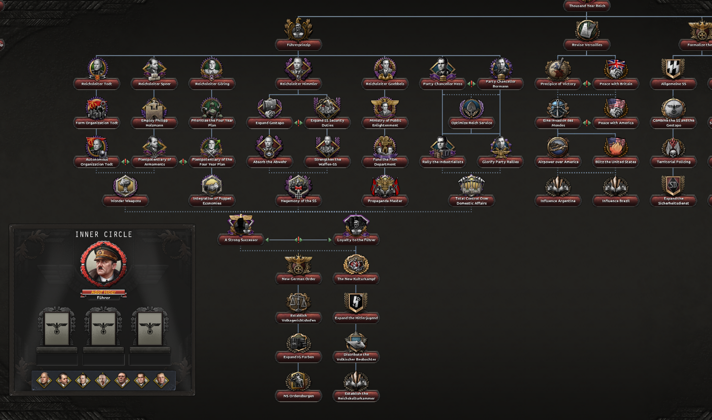

Hello again,
This is the last dev diary of this year, a pretty good year for Rise of Nations with the last month or so we made quite a big progress on Rise of Nations content wise.
Althought this came at an expense: performance... and also bugginess...
We have been working again on neat QoL features because most of our devs were with their families on Christmas eve...
The next year will be quite crazy in terms of content... What you have seen is about 10% of the next update...
German Focus Tree Revamp WW2
German WW2 focus tree had a very poor design/no design at all... It was just a bunch of mods and trees mixed together and called a day but not anymore!


